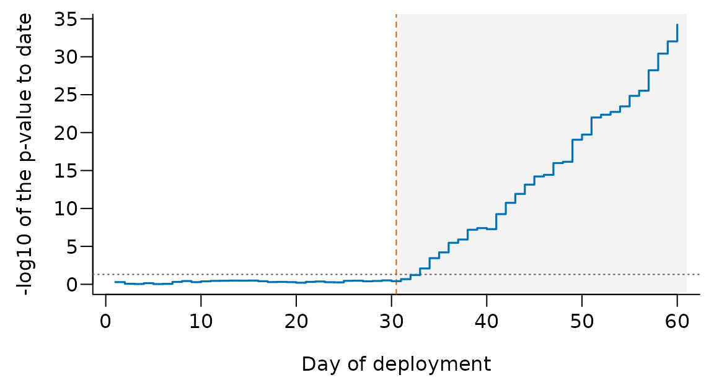

Further examples: grouped data, the EF read-out, monitoring and ridge fits
Source:vignettes/extensions.Rmd
extensions.RmdThis vignette collects examples that support the paper on
ebrahim.gof in the Journal of Statistical Software
but did not fit in its pages. The code is the code of the paper’s
replication script, with the same seeds, so the numbers below are the
numbers that script prints. The whole vignette runs in well under a
minute.
The examples use the working model for the bundled
gof_demo data. These data were generated from a logistic
model with a negative quadratic term in standardized age (see
?gof_demo). The working model enters age linearly, so it is
wrong in a smooth way, in one covariate, by design.
library("ebrahim.gof")
data("gof_demo", package = "ebrahim.gof")
fit <- glm(outcome ~ age + bmi + sex + treatment, data = gof_demo,
family = binomial)1. Sparse or grouped? A constructed example
Some statistics, such as the Pearson and deviance statistics and
McCullagh’s test, can be computed on the records (the sparse form) or on
the covariate patterns (the grouped form). When patterns repeat, the two
forms differ, and run.all.gof() reports both. The paper
shows this on the low-birth-weight data of MASS, where the
deviance gives p = 0.0550 sparse and p = 0.0235 grouped.
The data set gof_demo_grouped shows the effect at a
larger scale. It has the same process, sample size and misspecified
model as gof_demo, but age is in 10-year bins and body-mass
index in whole numbers, as such variables often arrive, and the outcome
was generated from the binned values. (Bins of 5 years were tried first
and gave no change of verdict.) The 800 records share 328 covariate
patterns.
data("gof_demo_grouped", package = "ebrahim.gof")
fit_g <- glm(outcome ~ age + bmi + sex + treatment,
data = gof_demo_grouped, family = binomial)
run.all.gof(fit_g, tests = c("Pearson", "Pearson (grouped)",
"Deviance", "Deviance (grouped)", "McCullagh",
"McCullagh (grouped)", "Osius-Rojek"))
#>
#> Goodness-of-fit battery: 7 tests (1 reject at 0.05)
#> ====================================================
#> Test Statistic df p-value
#> --- Global ----------------------------------------
#> Pearson [a] 769.2 795 0.7377
#> Pearson (grouped) [b] 346.8 323 0.1738
#> Deviance [a] 833.7 795 0.1655
#> Deviance (grouped) [b] 369.5 323 0.0380 *
#> --- Standardized ----------------------------------
#> McCullagh [c] -1.864 0.9689
#> McCullagh (grouped) [b] 0.847 0.1985
#> Osius-Rojek [b] 0.9196 0.3578
#> ----------------------------------------------------
#> Signif.: *** <.001 ** <.01 * <.05 . <.1
#> Notes:
#> [a] sparse form; comparison only, not counted
#> [b] grouped to 328 covariate patterns
#> [c] normal deviate, upper tailThe two forms are not small variations of each other. The Pearson statistic falls from 769.2 on 795 degrees of freedom to 346.8 on 323. McCullagh’s statistic moves from z = -1.864 to z = 0.847. The deviance changes its verdict, from p = 0.1655 sparse to p = 0.0380 grouped. Data, model and test name are the same; only the treatment of the patterns differs. Only the grouped forms are counted in the header.
Where every record is its own pattern, as in gof_demo,
grouping cannot rescue the Pearson and deviance statistics, and the
partition, standardized and directed families are the tools. The grouped
forms matter for replicated but unbalanced patterns, where rounded or
categorical covariates live. Such data also have tied fitted risks, so
call set.seed() before the battery: the rows that form risk
groups break ties at random.
2. The EF read-out by group
ef.gof() returns, besides the test, the terms of each
risk group in the attribute "groups": the standardized
residual r, its weight b, and the directional
read-out c = b r. Their sum is the removed part
C = HL - EF. No two records of gof_demo share
a fitted risk, so the grouping draws nothing at random.
ef <- ef.gof(fit, G = "auto", reference = "normal")
ef
#> Test Test_Statistic df Reference p_value G HL
#> 1 Ebrahim-Farrington 1.767261 NA normal 0.03859226 32 42.19486
#> C
#> 1 -1.603209
g <- attr(ef, "groups")
head(g[order(abs(g$c), decreasing = TRUE),
c("group", "n", "observed", "expected", "pbar", "c")], 4)
#> group n observed expected pbar c
#> 1 1 25 0 1.237513 0.04950053 -0.9479216
#> 4 4 25 0 2.440586 0.09762342 -0.8918152
#> 16 16 25 11 6.043133 0.24172533 0.5587665
#> 13 13 25 2 5.160181 0.20640722 -0.4531319With G = "auto" the 32 groups of 25 give z = 1.767 and p
= 0.0386; this is the EF-normal row of the battery. The
ten-group EF statistic (the battery’s EF row) is 15.95 on 8
degrees of freedom (p = 0.0431), against HL = 15.52 on the same
groups.
The removed part C is -1.603 here and -0.435 with ten groups. By the
help page of ef.gof(), C < 0 says that, on balance, the
model underestimates how fast the risk approaches zero in the low-risk
groups or one in the high-risk groups. The largest terms c
are in groups 1 and 4, at the lowest risks, with no events against 1.24
and 2.44 expected. The largest positive term, group 16, has 11 events
against 6.04 expected. This agrees with the EDGE curve of
plot(edge.gof(fit)): the model predicts too high a risk at
both ends of the risk range and too low a risk in between, the shape a
missing negative quadratic term produces.
3. Is the LINK verdict real? De-aliasing
In-sample, localize.gof(fit, B = 199, seed = 1) names
both LINK and COV for this model (see
vignette("ebrahim-gof-toolbox")). Is LINK
real? The omitted term is curvature in age, a covariate misfit. But age
also enters the score, so part of it shows as a bend in the map from
score to risk. dealias = TRUE removes from the
LINK bases what the covariates explain.
loc_d <- localize.gof(fit, B = 199, seed = 1, dealias = TRUE)
loc_d
#>
#> Localization of misfit: closed testing over orthogonal groups
#>
#> data: fit (n = 800)
#> setting: in-sample checking of a fitted logistic model
#> reference: parametric bootstrap, 199 draws
#> LINK de-aliased from: age, bmi
#>
#> p-values by group (alone, and adjusted by closed testing):
#> alone adjusted named
#> LINK 0.4000 0.4000
#> COV 0.0050 0.0050 *
#>
#> groups named (closed testing) at FWER 0.05: COV
#> recommended update: revise the model; recalibration cannot repair misfit among
#> patients who share a scoreLINK is no longer named (p = 0.400), COV
still is, and the update is a revised model, not a recalibration.
4. Monitoring a deployed model with edge.stream()
edge.stream() keeps the sufficient statistics of the
EDGE test on fixed risk groups, so each new batch of records costs the
same, however many came before. Its result equals that of
edge.gof() on all records so far, up to rounding.
In this simulation the reference risks of 5000 development records fix ten risk groups, and 200 new records arrive each day for 60 days. Up to day 30 the outcomes follow the predictions. From day 31 they follow a linear predictor 0.7 times the original. Because its mean is -1.5, this raises the average risk as well as flattening it, so both the calibration intercept and the slope drift. Each day the stream is updated with the new records only.
set.seed(2)
p_dev <- plogis(rnorm(5000, -1.5, 1))
s <- edge.stream(p_ref = p_dev, G = 10)
pv_day <- numeric(60)
for (day in 1:60) {
lp <- rnorm(200, -1.5, 1)
yy <- rbinom(200, 1, plogis(if (day <= 30) lp else 0.7 * lp))
s <- update(s, yy, plogis(lp))
pv_day[day] <- summary(s)$p_value
}
s
#> EDGE stream: 12000 records in 10 groups (smallest 1062), basis poly3
#> S = 166.527 on 4 df, p = <2e-16
round(pv_day[c(30, 31, 32, 33, 35, 40)], 4)
#> [1] 0.3853 0.2096 0.0592 0.0081 0.0001 0.0000Up to day 30 every daily p-value is above 0.30. It falls below 0.05 first on day 33, three days after the drift begins, and is about 6e-35 on day 60.
lp10 <- -log10(pmax(pv_day, 1e-300))
op <- par(mar = c(3.6, 3.9, 0.6, 0.6), mgp = c(2.4, 0.6, 0), las = 1)
plot(1:60, lp10, type = "n", xlab = "Day of deployment",
ylab = "-log10 of the p-value to date", bty = "l")
rect(30.5, -1, 61, max(lp10) * 2, col = "#F2F2F2", border = NA)
abline(v = 30.5, lty = 2, col = "#D55E00")
abline(h = -log10(0.05), lty = 3, col = "grey40")
lines(1:60, lp10, type = "s", lwd = 1.6, col = "#0072B2")
par(op)A single look has the stated level. Looking every day and acting on the first rejection, however, inflates the error rate unless the level is spent across the looks. The trace is a monitor; a decision rule needs a planned schedule of looks.
5. A ridge fit: shrink.gof() and
calm.gof()
Under a ridge penalty the usual chi-square references of grouped
tests are not only weak but invalid: shrinkage moves the grouped
residuals even when the model is correct. shrink.gof()
corrects the Hosmer-Lemeshow and EDGE statistics and refers them to a
parametric bootstrap; calm.gof() uses the same correction
with a closed-form reference and one fit.
The simulated data have n = 400 records and 80 standard normal covariates, five of which carry the signal; the logistic model is correct.
set.seed(4)
n <- 400
k <- 80
Xr <- matrix(rnorm(n * k), n, k)
yr <- rbinom(n, 1, plogis(-0.5 + Xr[, 1:5] %*% rep(0.5, 5)))
sum(yr)
#> [1] 159The penalty is fixed, not tuned, at lambda = 40 on the log-likelihood
scale, which is 0.1 on the glmnet scale (lambda = n times
the glmnet value). With uncorrected = TRUE,
shrink.gof() also prints the p-values of the usual
references.
shrink.gof(Xr, yr, lambda = 40, B = 199, seed = 1,
uncorrected = TRUE)
#>
#> Shrinkage-corrected Hosmer-Lemeshow test
#> n = 400, p = 80 (p/n = 0.200), lambda = 40, G = 10, B = 199
#>
#> SC.HL S = 11.0232 p = 0.2650 (uncorrected p < 0.0001)
#> SC.EDGE S = 7.2335 p = 0.1250 (uncorrected p < 0.0001)On this one sample from a correct model, the uncorrected decile and
EDGE statistics give p < 0.0001: they reject the shrunk fit, not the
model. The corrected statistics do not (p = 0.2650 and 0.1250).
calm.gof() replaces the 199 refits by a closed-form
reference:
calm.gof(Xr, yr, lambda = 40, basis = "adaptive")
#>
#> CALM: closed-form goodness of fit for penalized logistic regression
#> lambda = 40 (theory scale) = 0.1 (glmnet scale)
#> G = 10, p/n = 0.200
#> SC.EDGE.adaptive S = 0.089 p = 0.8058 [degree 2, rho_hat 0.76]
#>
#> SC.EDGE.adaptive is the statistic to prefer; see ?calm.gof for the scope of
#> the reference.The scale of lambda matters. The same penalty given on
the glmnet scale gives the same result, while
lambda = 0.1 on the default scale is a penalty 400 times
weaker and tests another fit:
a1 <- calm.gof(Xr, yr, lambda = 40, basis = "adaptive")
a2 <- calm.gof(Xr, yr, lambda = 0.1, lambda_scale = "glmnet",
basis = "adaptive")
all.equal(a1, a2)
#> [1] TRUEOne sample shows how the functions are called, not how they behave
over repeated samples; the level and power of these tests are studied in
the author’s preprints cited on ?shrink.gof and
?calm.gof.